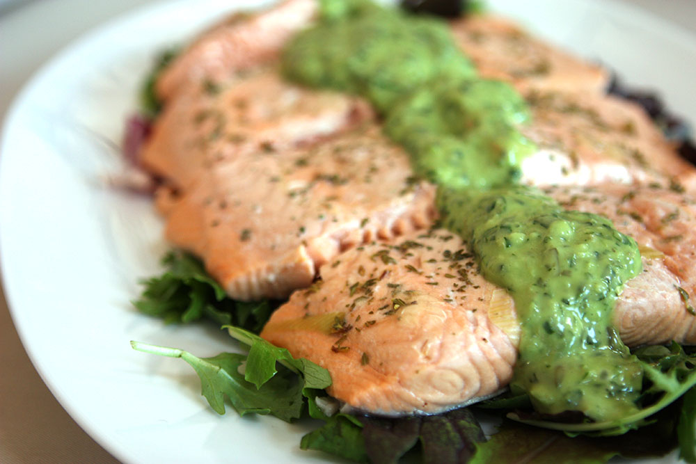
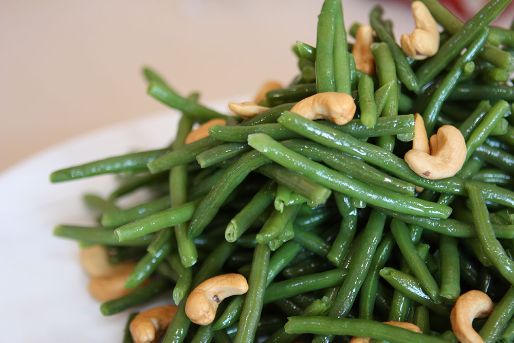

<?php include '../../inc/le_meta.php'; ?>
		
<div class="container content_wrap">
	<div class="row">         

<!-- start sidebar  include -->
	<?php include '../../inc/side_menu.php'; ?>
            
           <div class="span10 content_inside">
           
           
           
            	<div class="wrap_border">
                	<h3>CREATE-YOUR-OWN BUFFET MENU<p class="h3_sum">High quality compostable disposable plates, utensils, napkins, and buffet and table linens are included.  Upgrade to china, flatware and glassware is available for 4.00 per person for lunch buffets. China, flatware, and glassware are included for dinner service. Minimum Order: 25 people, price is based on entrée choice.</p></h3>
  					<div class="row menu_row">
    					<div class="thumbnail content_thumb span7">
      						<h4>Step 1 - Choice of TWO Salads</h4>
                          </div></div>  
                          <div class="row menu_row">
                          <div class="thumbnail content_thumb span7">
      						<p class="food_des">Mixed Green Salad (Dressing: Caesar, Balsamic, Sesame) <i class="icon-ok" data-toggle="tooltip" title="This item meets Eat Well Berkeley guidelines for healthy menu options."></i>,
Garden Green Salad with Candied Nuts and Seasonal Oranges <i class="icon-ok" data-toggle="tooltip" title="This item meets Eat Well Berkeley guidelines for healthy menu options."></i>,
Spinach Salad <i class="icon-ok" data-toggle="tooltip" title="This item meets Eat Well Berkeley guidelines for healthy menu options."></i>,
Israeli Couscous with Cranberries and Pecans <i class="icon-ok" data-toggle="tooltip" title="This item meets Eat Well Berkeley guidelines for healthy menu options."></i>,
Garden Pasta Salad 
Tuscan White Bean Salad <i class="icon-ok" data-toggle="tooltip" title="This item meets Eat Well Berkeley guidelines for healthy menu options."></i>,
Black Bean and Roasted Corn Salad <i class="icon-ok" data-toggle="tooltip" title="This item meets Eat Well Berkeley guidelines for healthy menu options."></i>,
Seasonal Melon and Feta Salad with Balsamic Glaze <i class="icon-ok" data-toggle="tooltip" title="This item meets Eat Well Berkeley guidelines for healthy menu options."></i>,
Classic Caesar Salad
Marinated Beet Salad <i class="icon-ok" data-toggle="tooltip" title="This item meets Eat Well Berkeley guidelines for healthy menu options."></i>.</p>
                            
                        </div> 
						
                        	
                        	
					</div>
                    
                    <div class="row menu_row">
    					<div class="thumbnail content_thumb span7">
      						<h4>Step 2 - Choice of TWO Entrées</h4>
                        </div></div>
                    
                    <div class="row menu_row">    
                    <div class="thumbnail content_thumb span7">
                            <h5>Seafood Selections</h5>
      						<p class="food_des">Peppered Salmon  <i class="icon-ok" data-toggle="tooltip" title="This item meets Eat Well Berkeley guidelines for healthy menu options."></i>, Honey-Miso Glazed Salmon, Parmesan Tilapia,<br />Lemon Caper Tilapia  <i class="icon-ok" data-toggle="tooltip" title="This item meets Eat Well Berkeley guidelines for healthy menu options."></i>, Cajun Fried Catfish. <br />
   						    Lunch 28.00 Dinner 30.00</p>
                       
                        </div>  
                        <div class="thumb_img_wrap span2">
                        	
                        </div>
						</div>
                    
                    <div class="row menu_row">
                        <div class="thumbnail content_thumb span7">
                            <h5>Premium Seafood Selections</h5>
      						<p class="food_des">Shrimp Stuffed Sole with Brandy Cream Sauce, Sesame Crusted Seared Ahi Tuna, Halibut with Fennel and Orange  <i class="icon-ok" data-toggle="tooltip" title="This item meets Eat Well Berkeley guidelines for healthy menu options."></i>, Tuscan Snapper  <i class="icon-ok" data-toggle="tooltip" title="This item meets Eat Well Berkeley guidelines for healthy menu options."></i>, Bay Scallops (market price). <br />
      						  Lunch 38.00, Dinner 40.00
                      </div> 
                        </div>
                    
                    <div class="row menu_row">
                         <div class="thumbnail content_thumb span7">
                            <h5>Meat and Poultry Selections</h5>
      						<p class="food_des">Apple Cider Braised Pork  <i class="icon-ok" data-toggle="tooltip" title="This item meets Eat Well Berkeley guidelines for healthy menu options."></i>, Beef Bourguignon, Pomegranate Chicken, Chicken Picatta  <i class="icon-ok" data-toggle="tooltip" title="This item meets Eat Well Berkeley guidelines for healthy menu options."></i>, Coq Au Vin. <br />
   						    Lunch 28.00, Dinner 30.00</p>
                        </div> </div>
                    
                    <div class="row menu_row">
                        
                         <div class="thumbnail content_thumb span7">
                            <h5>Premium Meat and Poultry Selections</h5>
      						<p class="food_des">**Ribeye with Gorgonzola Red Wine Sauce, **New York Steak Au Jus and Horseradish, **Sage Roasted Turkey Breast  <i class="icon-ok" data-toggle="tooltip" title="This item meets Eat Well Berkeley guidelines for healthy menu options."></i>, Stuffed Double-cut Porkchop  <i class="icon-ok" data-toggle="tooltip" title="This item meets Eat Well Berkeley guidelines for healthy menu options."></i>, Roasted Whole Guinea Hen. <br />
   						    Lunch 38.00, Dinner 40.00</p>
<p class="cite">** Carving station for the following entrees available.  Please inquire with Catering Sales Manager</p>
                        </div> </div>
                    
                    <div class="row menu_row">
                        
                         <div class="thumbnail content_thumb span7">
                            <h5>Vegetarian Options</h5>
      						<p class="food_des">Pumpkin Ravioli with Fried Sage and Brown Butter, Polenta Squares with Roasted Tomato and Mushroom Sauce  <i class="icon-ok" data-toggle="tooltip" title="This item meets Eat Well Berkeley guidelines for healthy menu options."></i>, Pesto Vegetable Lasagna, Vegetable Strudel with Roasted Red Pepper Basil Sauce (Vegan), Stuffed Portobello (Vegan)  <i class="icon-ok" data-toggle="tooltip" title="This item meets Eat Well Berkeley guidelines for healthy menu options."></i>, Tofu and Tempeh Stir Fry (Vegan). <br />
   						    Lunch 28.00, Dinner 30.00</p>
                        </div>
                        
                        
					</div>
                    
                    <div class="row menu_row">
                    	
    					<div class="thumbnail content_thumb span7">
      						<h4>Step 3 - Choice of THREE Sides</h4>
                            </div>
                    </div>
                    <div class="row menu_row">
                    <div class="thumbnail content_thumb span7">
                            <h5>Potatoes</h5>
      						<p class="food_des">Garlic Mashed, Rosemary Roasted  <i class="icon-ok" data-toggle="tooltip" title="This item meets Eat Well Berkeley guidelines for healthy menu options."></i>, Potato Skins with Sour Cream and Bacon</p>
                            
                             <h5>Grains</h5>
      						<p class="food_des">Wild and Brown Rice Pilaf  <i class="icon-ok" data-toggle="tooltip" title="This item meets Eat Well Berkeley guidelines for healthy menu options."></i>, Rice Pilaf, Cous Cous</p>
                            
                             <h5>Vegetables</h5>
      						<p class="food_des">Chef’s Seasonal Locavore Vegetable Choice (changes monthly)  <i class="icon-ok" data-toggle="tooltip" title="This item meets Eat Well Berkeley guidelines for healthy menu options."></i>, Roasted Zucchini and Squash  <i class="icon-ok" data-toggle="tooltip" title="This item meets Eat Well Berkeley guidelines for healthy menu options."></i>, Steamed Broccoli with Lemon
Sautéed Haricot Verts with Cashews  <i class="icon-ok" data-toggle="tooltip" title="This item meets Eat Well Berkeley guidelines for healthy menu options."></i>, Cinnamon Glazed Carrots  <i class="icon-ok" data-toggle="tooltip" title="This item meets Eat Well Berkeley guidelines for healthy menu options."></i></p>
                        </div> 
						<div class="thumb_img_wrap span2">
                        	
                        </div>
					</div>
                    
                    <div class="row menu_row row_last">
    					<div class="thumbnail content_thumb span7">
      						<h4>Step 4 - Choice of ONE Dessert</h4>
                           
      						<p class="food_des">
Please see <a href="desserts.html">Dessert</a> section for selection.</p>
                        </div> 
					</div>
          </div>     

    <br />
  <p><i class="icon-ok" data-toggle="tooltip" title="This item meets Eat Well Berkeley guidelines for healthy menu options."></i> Items marked with a checkmark meet Eat Well Berkeley guidelines for healthy menu options </p> 
               
            </div>
            
 </div>  
 </div> 


<!-- start sidebar  include -->
	<?php include '../../inc/footer.php'; ?>